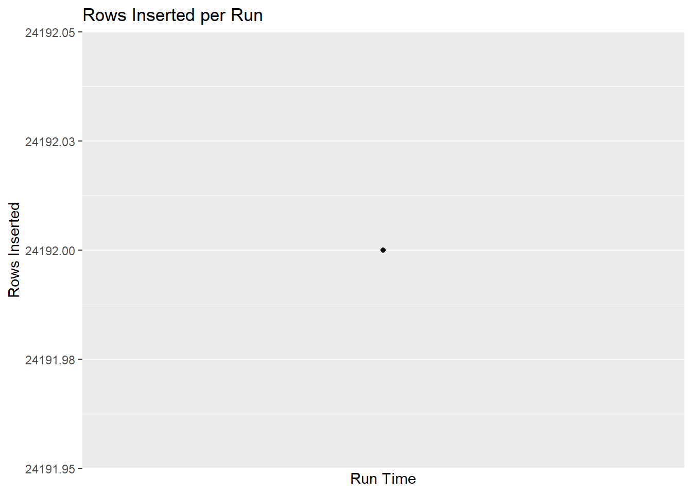

Show code
library(tidyverse)
library(DBI)
library(odbc)
library(here)
# source function that reads data from USGS website
source(here('code', 'fn_get_fishtracks.R'))This Quarto appends new records from FishTracks USGS website, which displays 7 days of Real-Time acoustic tag detections at 5-minute intervals, to the IRBS database that accumulates these data with a long-term vision. Data may eventually be supplemented by a ~6-month schedule of data physically downloaded from each receiver with longer-term and/or more detailed data.
The IRBS FishTracks Real-Time database is referenced here and on Posit Connect as a DSN, but lives on the PRI Datastorm Microsoft SQL Server.
library(tidyverse)
library(DBI)
library(odbc)
library(here)
# source function that reads data from USGS website
source(here('code', 'fn_get_fishtracks.R'))options(show.error.messages = TRUE)
# simple logging helper
log_msg <- function(msg, level = "INFO") {
cat(sprintf("[%s] [%s] %s\n", Sys.time(), level, msg))
}
# initialize variables in case of error
rows_inserted <- NA_integer_
rows_skipped <- NA_integer_
rows_retrieved <- NA_integer_
stations_retrieved <- NA_integer_
stations_lacking_data <- NA
compiled <- NULL
tbl_station <- NULL
tryCatch({
log_msg("Job started")
# Connect to db
con <- dbConnect(odbc::odbc(), "Fish_Tracks_Real_Time")
log_msg("Connected to database")
# Get stations
tbl_station <- tbl(con, "station") %>% collect()
log_msg(sprintf("Loaded %d stations", nrow(tbl_station)))
# Fetch data
DateRetrieved = now()
log_msg("Fetching FishTracks data")
compiled <- map_df(tbl_station$station_id, function(id) {
tryCatch(
get_fishtracks(id),
error = function(e) {
log_msg(paste("Station failed:", id, "|", e$message), "WARN")
return(NULL)
}
)
}) %>%
mutate(
DateRetrieved = DateRetrieved,
DetectionID = paste(station_id, Record, sep = '_')
) %>%
relocate(DetectionID)
log_msg(sprintf("Retrieved %d new records", nrow(compiled)))
# Write new data to staging table
dbWriteTable(con,
name = "staging_event",
value = compiled,
overwrite = TRUE)
log_msg("Wrote staging table")
# Append only new rows to events table
append_sql <- "
INSERT INTO event
SELECT *
FROM staging_event s
WHERE NOT EXISTS (SELECT 1
FROM event t
WHERE t.DetectionID = s.DetectionID)
"
rows_retrieved <- nrow(compiled)
rows_inserted <- as.integer(dbExecute(con, append_sql))
rows_skipped <- rows_retrieved - rows_inserted
stations_retrieved <- length(unique(compiled$station_id))
stations_lacking_data <- setdiff(tbl_station$station_id, unique(compiled$station_id))
timestamp <- Sys.time()
log_msg(sprintf("Rows retrieved: %d", rows_retrieved))
log_msg(sprintf("Rows inserted: %d", rows_inserted))
log_msg(sprintf("Rows skipped: %d", rows_skipped))
log_msg(sprintf("Stations retrieved: %d/%d", stations_retrieved, length(tbl_station$station_id)))
log_msg(paste("Station IDs not retrieved: ", stations_lacking_data))
# Log run to SQL log table
dbExecute(
con,
"INSERT INTO insert_log (run_time, rows_inserted, rows_skipped) VALUES (?, ?, ?)",
params = list(timestamp, rows_inserted, rows_skipped)
)
log_msg("Logged run to database")
log_msg("Job completed successfully", "SUCCESS")
},
# Handle errors with useful logging
error = function(e){
log_msg(paste("ERROR:", e$message), "ERROR")
# Safe defaults so logging doesn't fail
rows_inserted <<- if (!exists("rows_inserted")) NA_integer_ else rows_inserted
rows_skipped <<- if (!exists("rows_skipped")) NA_integer_ else rows_skipped
# Try logging error to SQL
try({
if (exists("con") && dbIsValid(con)) {
dbExecute(
con,
"INSERT INTO insert_log (run_time, rows_inserted, rows_skipped) VALUES (?, ?, ?)",
params = list(Sys.time(), rows_inserted, rows_skipped)
)
dbDisconnect(con)
}
}, silent = TRUE)
# IMPORTANT: print full condition so Quarto shows it
message("Full error:")
print(e)
# Re-throw so Connect marks failure
stop(e)
}
)[2026-06-25 14:18:08.862501] [INFO] Job started
[2026-06-25 14:18:09.193916] [INFO] Connected to database
[2026-06-25 14:18:09.557229] [INFO] Loaded 14 stations
[2026-06-25 14:18:09.55867] [INFO] Fetching FishTracks dataStation ID 05536890: 2,016 rows successfully retrieved.Station ID 05536995: 2,016 rows successfully retrieved.Station ID 05538010: 2,016 rows successfully retrieved.Station ID 05538020: 2,016 rows successfully retrieved.Station ID 05541498: 2,016 rows successfully retrieved.[2026-06-25 14:18:29.388337] [WARN] Station failed: 1 | Failed to access CSV URL:
https://cm.water.usgs.gov/data/Fish_Tracks_Real_Time/1.csv
The resource does not exist or is unreachable.Station ID 411133091003401: 2,016 rows successfully retrieved.Station ID 411333091051000: 2,016 rows successfully retrieved.Station ID 411955088280601: 2,016 rows successfully retrieved.Station ID 412109083063800: 2,016 rows successfully retrieved.Station ID 412341088161001: 2,016 rows successfully retrieved.Station ID 412618083021701: 2,016 rows successfully retrieved.Station ID 412652509111316: 2,016 rows successfully retrieved.Warning in get_fishtracks(id): Downloaded data table for Station ID
412957090371001 is not expected shape (69 columns). Station may be skipped.Station ID 412957090371001: 0 rows successfully retrieved.[2026-06-25 14:18:50.652751] [INFO] Retrieved 24192 new records
[2026-06-25 14:18:53.177699] [INFO] Wrote staging table
[2026-06-25 14:18:53.721444] [INFO] Rows retrieved: 24192
[2026-06-25 14:18:53.721946] [INFO] Rows inserted: 24192
[2026-06-25 14:18:53.732192] [INFO] Rows skipped: 0
[2026-06-25 14:18:53.732635] [INFO] Stations retrieved: 12/14
[2026-06-25 14:18:53.732894] [INFO] Station IDs not retrieved: 1
[2026-06-25 14:18:53.732894] [INFO] Station IDs not retrieved: 412957090371001
[2026-06-25 14:18:53.818257] [INFO] Logged run to database
[2026-06-25 14:18:53.818953] [SUCCESS] Job completed successfully✅ Data inserted
log_data <- tbl(con, "insert_log") %>%
collect()
library(ggplot2)
ggplot(log_data, aes(run_time, rows_inserted)) +
geom_line() +
geom_point() +
labs(
title = "Rows Inserted per Run",
x = "Run Time",
y = "Rows Inserted"
)`geom_line()`: Each group consists of only one observation.
ℹ Do you need to adjust the group aesthetic?
# Disconnect
dbDisconnect(con)